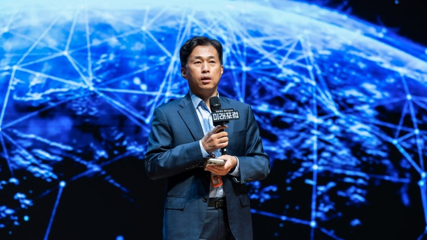
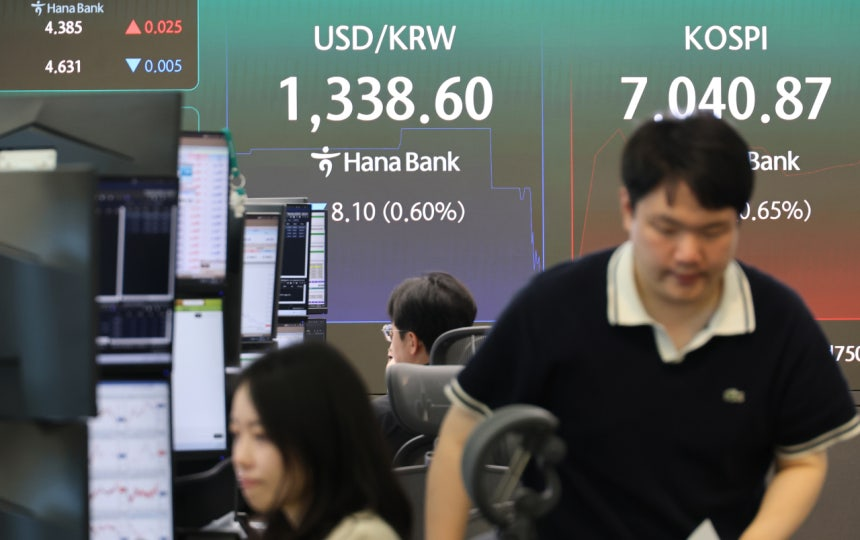

[이코노미스트 김두용 기자] 국내 증시에서 개인 매도세가 이어지고 있지만 외국인과 기관의 지지로 반도체주가 상승하는 흐름을 보여주고 있다. 해외 증권사들이 AI(인공지능) 수요 확산에 대한 긍정적 반응을 내놓으며 반도체 ‘세계 투톱’에 대한 외국인 투자자의 러브콜이 지속되고 있다.
9일 유가증권시장에서 삼성전자와 SK하이닉스가 나란히 상승하면서 각각 27만원과 180만원을 다시 돌파했다. 증시 초반에 개인이 5거래일 만에 매수 우위 흐름을 보이는 듯 했지만 시간이 흐르면서 매도 우위로 전환했다.
삼성전자와 SK하이닉스는 최근 4거래일 동안 외국인과 기관의 매수세로 우상향을 그렸다. 씨티그룹의 TMT(기술·미디어·통신) 컨퍼런스와 골드만삭스 컨퍼런스 등을 통해 AI 수요 확산과 관련한 긍정적인 메시지가 퍼지면서 외국인 투자자의 매수가 지속 유입되는 흐름이다. 골드만삭스의 팀 모 아시아태평양 수석 주식전략가는 메모리 시장의 강력한 수요를 긍정적으로 바라봤다. 그는 “미국 빅테크의 내년 자본지출 규모가 종전 전망치 8000억 달러에서 1조2000억 달러로 상향될 것으로 추정된다”고 밝힌 바 있다.
